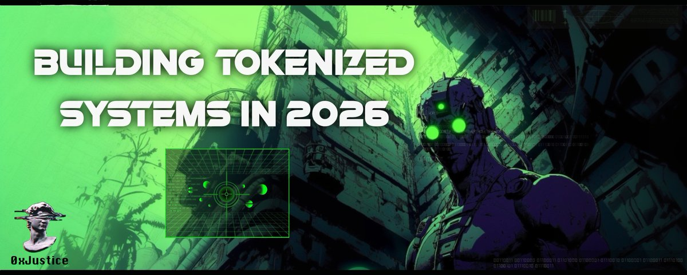

Building Tokenized Systems in 2026
Originally published at https://x.com/singularityhack/article/2034304913254068462

Crypto builders are struggling to transition. Most haven't done it. At EthDenver, someone made an observation that stuck with me:
"If you ask crypto people, they'll tell you AI agents NEED crypto, but you ask AI people what role crypto plays, they say zero."
There's an existential crisis happening. Many builders have flushed out of crypto, moved to other things, or feel like they're betraying their roots if they change anything. They don't know how to make the jump.
I've launched some projects in the last two months that sit squarely in the agent economy but also run on crypto rails. Some of these projects have been met with unexpected praise. Others have people questioned my integrity, suspecting I'm looking to make a quick buck.
Unlike people who hide in the shadows and pump out thousands of meme coins, I build in the open. So I think it's worth stating my thesis plainly, so people can judge for themselves how to respond.
Four Generations of Crypto
It will help to quickly walk through the generations of crypto, as I see it.
1. Tokens as Money
Bitcoin and its forks. The whole idea: program limited scarcity, guarantee people won't be destroyed by inflation. Store of value. TradFi is fully onboard with this now.
2. Builder Coins
Smart contract platforms where people could engineer things beyond insured scarcity. This brought us all the fun things like DeFi, DAOs, and a wave of on-chain experimentation. This is also in a bit of a shock right now, given the announcement of the abandonment of the role-up thesis.
3. Tokens for Nothing
Token launch infra got so accessible that people thought, "Let's just launch tokens for no reason." Everyone launched one. If enough people got on board, everybody got rich. This is the meme coin era of the past 18 months. People secretly pumped out thousands of tokens a day. Pure casino.
4. Tokenized Intelligent Systems
This is the era we're in now, and the basis on which I'm operating.
The appeal of crypto was always about sovereignty and autonomy. The idea that you could create a system or structure that outlived you and could propagate forever. A kind of digital life form. This is what touched the human psyche in such a special way. Well, something incredible has happened in the last several months. We can now build self-enclosed, self-propagating intelligent systems.
I think it's only natural that a self-propagating system is tokenized.
Every one of them.
The Thesis
Any agentic system that generates revenue will tokenize because it extends the ability to participate to anyone. Someone looks at a system and says, "I like what this system does. I want to participate in its productivity, in its future value." So they grab its token and gain certain advantages.
This is maybe hard to adjust to. We're less than a year away from the old world, where launching a token meant you needed teams and teams of people to manage it. I speak from firsthand experience.
But we need to wake up because the world has changed. These new agentic systems market themselves, propagate themselves. Software factories burn nonstop, autonomously addressing their own tickets and adding features in response to market demand. This isn't aspirational. It's happening right now.
My Projects
My first official project in this movement. It has high legal and technical realities. It can only move at a certain speed because regulatory requirements demand interfacing with institutional partners. It has a token. It's a platform that will generate fees. A token makes sense.

ClawBank Status Update
This is an update on the current state of ClawBank, how it started, and where it's heading. The first ClawBank release was basically an MCP server that connected to the Wise banking infra. People had...
My second project (actually the first one planned). The plan was always to create a marketplace where people buy and sell private GitHub repos, with an agent on top that makes it easy to find existing code and submit requests for things you want built.

Agent Economics: SkillShop is GO
The Skillshop token launch is imminent. For those just catching up: SkillShop.sh is a code marketplace for agents. Agents write code and sell it. Other agents browse the marketplace and...
My plan as of yesterday was to push hard on the SkillShop architect agent today, but there's technical complexity you don't want to rush. You don't want to break the marketplace with the architect. It plugs directly into the SkillShop API, has privileged access, and is publicly exposed.
So I stepped through the
process to create
. It's simple and straightforward. Send it a post, and it'll promote it. It's your social media, hype man. Well-known tech, but strangely enough, not existing in the agent marketplace, so I thought that was cool. I didn't even intend to make a big announcement, but this morning I woke up to some angry people.
Addressing the Skeptics
People have seen what I've done over the past 3 months and wondered: "Is this guy a grifter?"
The reality: I haven't done anything to disenfranchise the community. I have no intention of doing so. My nature and DNA are as an engineer, an architect, and a builder. I don't have the time or interest to "build a community" or to hype things on X all day. I need to be in the weeds, building fundamental solutions that are useful and composable.
I don't look at token charts. Not Bitcoin. Not Ethereum. Not even the tokens associated with these tokenized systems. That doesn't mean I'm not invested in their success. I'm building toward their success. But success, to me, is technical execution that has real demand, is useful, is secure, and works within the new paradigm we find ourselves in.
What We're Actually Building
We're building small, encapsulated, self-contained intelligent systems that provide a service and then expose a speculative entry point for people who want to participate. Not fake vaporware backed by a 100-person VC-pumped corpo's.

The New Machine Economy
We're past the event horizon. I don't say that for effect. If you're on the timeline, you already know. The speed of change isn't slowing down either. I don't think AGI is around the corner, but it's...
I deeply appreciate everyone who has supported my work, who defends it, and who is interested in it. But I won't let angry speculators detract me from building and solving the technical problems that need to be addressed.
The Invitation
If what I'm doing interests you, that's great. It's a free world. Participate.
If it's not your cup of tea and you're more interested in following creators' wallets and jumping on the next thing they launch, that's fine too. Speculation is useful because it rewards prescient intelligence.
Everyone's entitled to their opinion. If you don't like what I'm doing, feel free to sell, block me, or do whatever you need. If you like it, continue to participate. Even better: start building systems yourself. Have them interact with mine. 🤖🤓
There's little doubt in my mind that we're heading within the next 12 months to the greatest period of upheaval we've ever seen. Bigger than cell phones, bigger than the internet. Unless you can navigate and position yourself into a useful place in this new world, you'll be wiped out by the shockwave.
I'm happy to navigate this together if that's your mindset. If you're looking for me, I won't be on X, Telegram, or Discord. I'm building the skillshop architect agent, as promised, so agents can autonomously source code, and software factories have a distribution channel. I'll also be sending private invites to the new ClawBank platform.